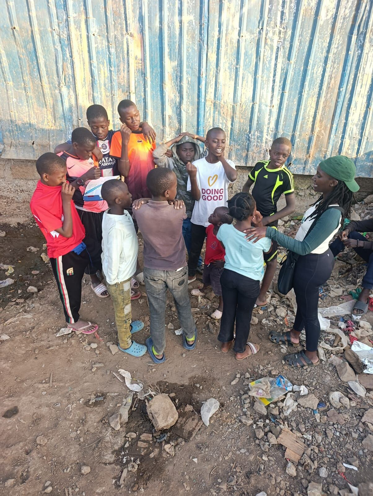
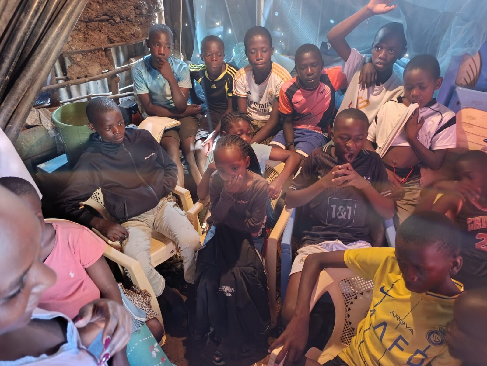
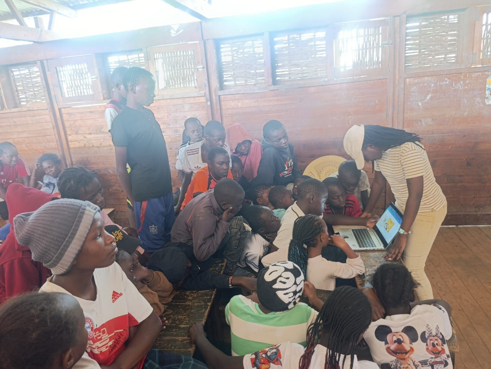
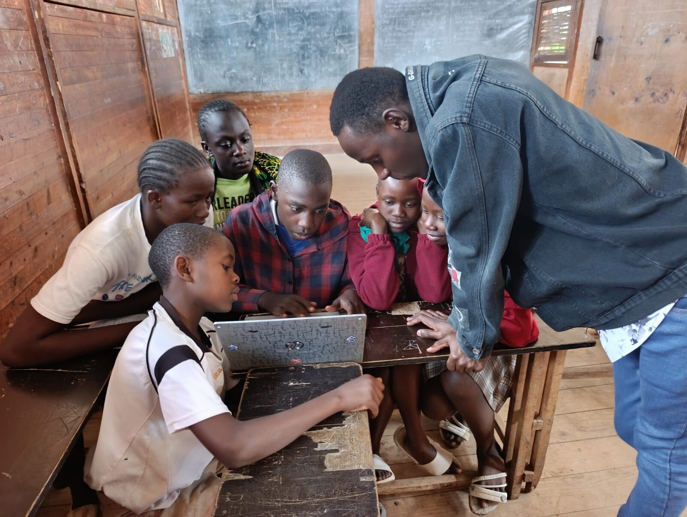
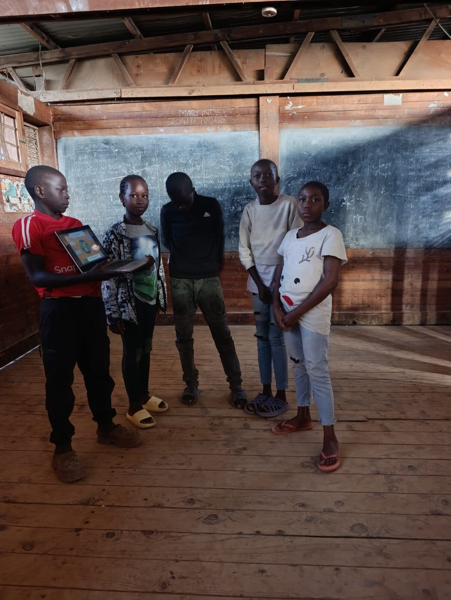
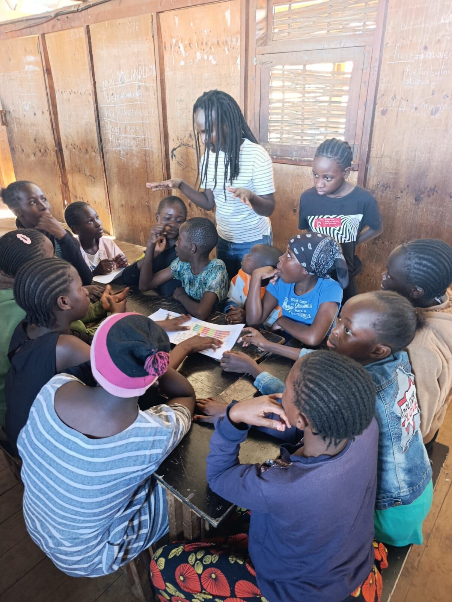
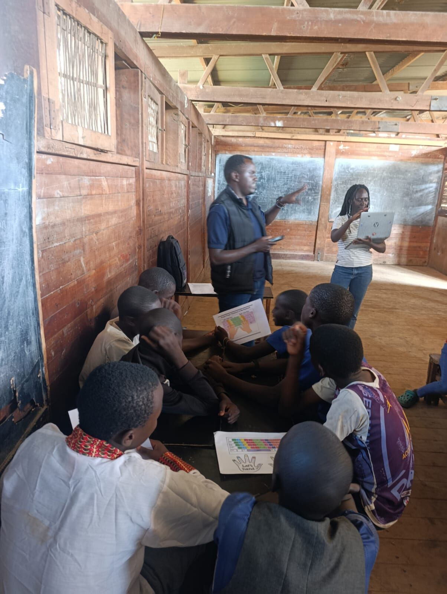

Every session added to something bigger, a running record of how the programme has grown, one step at a time.

No classroom, no equipment, just a founder, a handful of curious children, and a decision to begin anyway.

We moved indoors: borrowed space, borrowed chairs, and one shared laptop passed from hand to hand.

Curiosity grew, and the children became our best recruiters. We moved into WhyNot Academy, a partner space in Mathare that could hold the growing class.

Resources stayed scarce, so we taught around it: small groups, shared screens, and children teaching each other between turns.

The first project presentations: Canva designs the children built and stood up to explain, in front of their classmates.

We started with one girl in the room. One conversation at a time, that changed. Girls now make up the majority of every class.

Volunteers began showing up: friends, mentors, and young professionals lending an hour, a laptop, or a lesson plan of their own.
"Change starts with me. If every young person who has a skill, even a basic one, taught just one other person, we would close this gap faster than any institution could."Founding belief behind Build & Bloom Africa